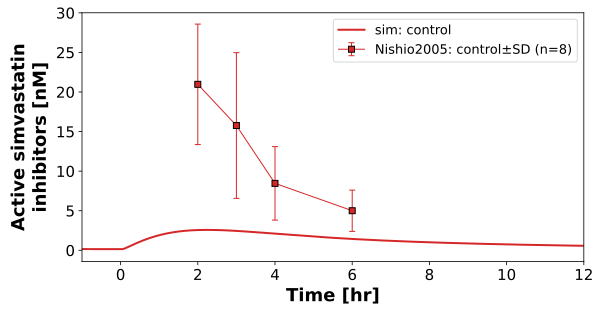
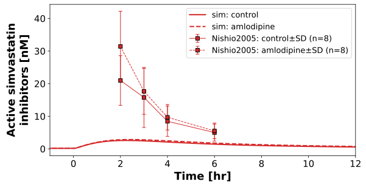
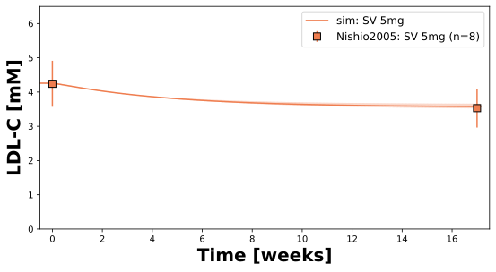

Overview
Models
| model | source |
|---|---|
| model | simvastatin_body_flat.xml |
Datasets
| dataset | file |
|---|---|
| Fig1_active_simva_inhibitors_control | datasets/Nishio2005_Fig1_active_simva_inhibitors_control.tsv |
| Fig1_active_simva_inhibitors_amlodipine | datasets/Nishio2005_Fig1_active_simva_inhibitors_amlodipine.tsv |
| Fig2_cholesterol_control | datasets/Nishio2005_Fig2_cholesterol_control.tsv |
| Fig2_cholesterol_amlodipine | datasets/Nishio2005_Fig2_cholesterol_amlodipine.tsv |
| Fig2_ldl_c_control | datasets/Nishio2005_Fig2_ldl_c_control.tsv |
| Fig2_ldl_c_amlodipine | datasets/Nishio2005_Fig2_ldl_c_amlodipine.tsv |
| Fig2_hdl_c_control | datasets/Nishio2005_Fig2_hdl_c_control.tsv |
| Fig2_hdl_c_amlodipine | datasets/Nishio2005_Fig2_hdl_c_amlodipine.tsv |
| Fig2_triglyceride_control | datasets/Nishio2005_Fig2_triglyceride_control.tsv |
| Fig2_triglyceride_amlodipine | datasets/Nishio2005_Fig2_triglyceride_amlodipine.tsv |
Figures (3)






Code
"""Simulation experiment of the study Nishio2005."""
from typing import ClassVar, override
import matplotlib.pyplot as plt
from matplotlib.axes import Axes
from matplotlib.figure import Figure as FigureMPL
from pkpdsim.metadata import (
ApplicationForm,
Coadministration,
Dosing,
Fasting,
Health,
PKPDMappingMetaData,
Route,
Tissue,
)
from sbmlsim import Q
from sbmlsim.data import DataSet
from sbmlsim.fit import FitData, FitMapping
from sbmlsim.plot import Axis, Figure
from sbmlsim.simulation import Scan, Simulation
from pkdb_models.models.simvastatin.experiments.base_experiment import (
DAY,
WEEK,
FontKwargs,
SimvastatinSimulationExperiment,
)
class Nishio2005(SimvastatinSimulationExperiment):
"""Simulation experiment of Nishio2005.
Eight Japanese patients (64 years, 61.5 kg) with mild hypertension and
hypercholesterolemia, treated with simvastatin 5 mg/day and enalapril for
more than 3 months before the study. Fixed order: 4 weeks of simvastatin
5 mg/day alone (enalapril stopped, control), then 4 weeks of simvastatin
5 mg/day with amlodipine 5 mg/day. On the last day of each period the
plasma HMG-CoA reductase inhibitors were measured after an overnight fast
(breakfast 2 hr after the dose) by an enzymatic assay without a base
hydrolysis: the active inhibitors. Mean and SD.
The blood lipids of Table 1 are not dated in the paper. The LDL cholesterol
fell from 164 (Table 1) to 136 mg/dl in the 4 weeks of unchanged simvastatin
5 mg/day, which a steady state under simvastatin cannot explain: Table 1 is
the untreated baseline, and the lipids at the end of the first period are
the steady state after more than 3 months and 4 weeks of 5 mg/day
(`weeks_before`). The time of the cholesterol is the time since the start
of simvastatin.
"""
#: the arms: the intervention of the data, the label and the line style
arms: ClassVar[dict[str, tuple[str, str, str]]] = {
"control": ("SIM", "control", "solid"),
"amlodipine": ("SIM, AML", "amlodipine", "dashed"),
}
#: Amlodipine is a weak inhibitor of CYP3A4. 5 mg/day for 4 weeks increased
#: the AUC of the active inhibitors 1.28-fold and the Cmax 1.43-fold
#: (Table 2); amlodipine 10 mg increased the AUC of simvastatin acid
#: 1.58-fold (Zocor label). An activity of 0.7 of the reference in liver
#: and gut gives 1.66-fold simvastatin acid and 1.21-fold active inhibitors
#: in the model. Not fitted, the arm is validation data.
f_cyp3a4_amlodipine: ClassVar[float] = 0.7
#: the weeks of simvastatin 5 mg/day before the study (more than 3 months)
weeks_before: ClassVar[int] = 13
#: the doses of simvastatin 5 mg/day of a period of 4 weeks, the last on
#: the day of the sampling
number_pk: ClassVar[int] = 4 * 7
@override
def datasets(self) -> dict[str, DataSet]:
dsets = {}
for fig_id in ["Fig1", "Fig2"]:
dframes = self.load_dataframes_by_substance(fig_id)
for substance, df in dframes.items():
if fig_id == "Fig1":
# the predose concentrations are plotted as 0, below the
# limit of the assay at the steady state of 5 mg/day
df = df[df.time > 0]
else:
# the end of the periods after the weeks before the study
df = df.copy()
df.loc[df.time > 0, "time"] += self.weeks_before
dset = DataSet.from_df(df, ureg=self.ureg)
if substance == "active simva inhibitors":
dset.unit_conversion("mean", 1 / self.Mr.ActiveInh)
elif substance == "cholesterol":
dset.unit_conversion("mean", 1 / self.Mr.cho)
elif substance == "hdl-c":
dset.unit_conversion("mean", 1 / self.Mr.hdlc)
elif substance == "ldl-c":
dset.unit_conversion("mean", 1 / self.Mr.ldlc)
for arm, (intervention, _, _) in self.arms.items():
dsets[self.to_sid(f"{fig_id}_{substance}_{arm}")] = dset[
dset.intervention == intervention
]
return dsets
@override
def simulations(self) -> dict[str, Simulation | Scan]:
"""Daily oral doses of 5 mg simvastatin.
The pharmacokinetics: the doses of the 4 weeks of a period, the last
dose at time 0 (the steady state is reached in days). The cholesterol:
the doses from the start of simvastatin, more than 3 months before the
study, to the end of the first period in the familial
hypercholesterolemia (FH) types with the LDL cholesterol of Table 1,
time 0 is the first dose.
"""
dose = Q(5, "mg")
changes = {
"control": self.default_changes(),
"amlodipine": self.cyp3a4_changes(self.f_cyp3a4_amlodipine),
}
tcsims: dict[str, Simulation | Scan] = {
f"simva_po_5mg_{arm}": self.multiple_doses(
dose=dose,
number=self.number_pk,
interval=DAY,
time_shift=-(self.number_pk - 1) * DAY,
dt=2.0,
changes=changes[arm],
)
for arm in self.arms
}
ldlc_init = 4.241014 # [mM], LDL cholesterol 164 mg/dl (Table 1)
number = (self.weeks_before + 4) * 7 + 1
for fh_type_key in self.fh_types:
tcsims[self.to_sid(f"simva_po_5mg_control_cho_{fh_type_key}")] = (
self.presim(
end=WEEK + number * DAY,
dt=DAY / 10,
changes=[self.doses(dose, number)],
ldlc=ldlc_init,
FH_type=fh_type_key,
time_shift=-WEEK,
)
)
return tcsims
@override
def fit_mappings(self) -> dict[str, FitMapping]:
def metadata(coadministration: Coadministration) -> PKPDMappingMetaData:
return PKPDMappingMetaData(
tissue=Tissue.PLASMA,
route=Route.PO,
application_form=ApplicationForm.TABLET,
dosing=Dosing.MULTIPLE,
health=Health.PRIMARY_HYPERCHOLESTEROLEMIA,
fasting=Fasting.FASTED,
coadministration=coadministration,
)
coadministrations = {
"control": Coadministration.NONE,
"amlodipine": Coadministration.AMLODIPINE,
}
return {
f"fm_active_inhibitors_{arm}": FitMapping(
self,
reference=FitData(
self,
dataset=self.to_sid(f"Fig1_active simva inhibitors_{arm}"),
xid="time",
yid="mean",
yid_sd="mean_sd",
count="count",
),
observable=FitData(
self,
task=f"task_simva_po_5mg_{arm}",
xid="time",
yid="Cve_active_inhibitors",
),
metadata=metadata(coadministrations[arm]),
)
for arm in self.arms
}
@override
def figures(self) -> dict[str, Figure]:
return {**self.figure_simva()}
@override
def figures_mpl(self) -> dict[str, FigureMPL]:
return {**self.figure_cho()}
def figure_simva(self) -> dict[str, Figure]:
"""Active simvastatin inhibitors on the last day of the periods."""
figures = {}
for key, arms in [
("control", ["control"]),
("amlodipine", ["control", "amlodipine"]),
]:
fig = Figure(
experiment=self,
sid=f"Fig_{key}",
num_rows=1,
num_cols=1,
**SimvastatinSimulationExperiment.figuresize_kwargs_one_panel,
)
plots = fig.create_plots(
xaxis=Axis("Time", unit=self.info.time.unit), legend=True
)
plots[0].set_yaxis(
self.info.activesimvainhibitors.axis,
self.info.activesimvainhibitors.unit,
)
for arm in arms:
_, label, linestyle = self.arms[arm]
plots[0].add_data(
task=f"task_simva_po_5mg_{arm}",
xid="time",
yid="Cve_active_inhibitors",
label=f"sim: {label}",
color=self.colors_simva["activesimvainhibitors"],
linestyle=linestyle,
)
plots[0].add_data(
dataset=self.to_sid(f"Fig1_active simva inhibitors_{arm}"),
xid="time",
yid="mean",
yid_sd="mean_sd",
count="count",
color=self.colors_simva["activesimvainhibitors"],
linestyle=linestyle,
label=f"{self.sid}: {label}",
)
xaxis = plots[0].xaxis
if xaxis is not None: # set by `create_plots`
xaxis.min = -1
xaxis.max = 12
figures[f"fig_{key}"] = fig
return figures
def figure_cho(self) -> dict[str, FigureMPL]:
"""LDL cholesterol of the 5 mg dose in the FH types with the data.
The figure of all blood lipids is added with `show_all_cho_data`.
"""
kwargs: FontKwargs = {"weight": "bold", "size": 16}
title_kwargs: FontKwargs = {"weight": "bold", "size": 18}
figures: dict[str, FigureMPL] = {}
fig_all, [[ax1, ax2], [ax3, ax4]] = plt.subplots(
nrows=2,
ncols=2,
sharex="col",
figsize=(15, 8),
)
fig_all.subplots_adjust(
bottom=0.12, top=0.925, left=0.07, right=0.95, hspace=0.05
)
fig_all.suptitle("Nishio2005", **title_kwargs)
ax3.set_xlabel("Time [weeks]", **kwargs)
ax4.set_xlabel("Time [weeks]", **kwargs)
ax1.set_ylabel("LDL-C [mM]", **kwargs)
ax2.set_ylabel("HDL-C [mM]", **kwargs)
ax3.set_ylabel("Total cholesterol [mM]", **kwargs)
ax4.set_ylabel("Triglycerides-I [mg/dl]", **kwargs)
fig_cho, axs_cho = self.create_cholesterol_plot()
# simulation of the 5 mg dose
dose = 5 # [mg]
linestyle = self.simtype_linestyle["control"]
label = "sim: SV 5mg"
FH_results_df = self.create_FH_results(task_key="5mg_control_cho")
axs_cho = self.plot_FH_results(
ax=axs_cho,
label=label,
color=dose,
linestyle=linestyle,
df=FH_results_df,
)
ax1 = self.plot_FH_results(
ax=ax1,
label=label,
color=dose,
linestyle=linestyle,
df=FH_results_df,
)
def plot_data(ax: Axes, dset_key: str, dset_label: str) -> None:
"""Plot a dataset with the number of subjects at its last time."""
dataset = self._datasets[dset_key]
max_time_idx = dataset["time"].idxmax()
count = int(dataset["count"][max_time_idx])
color = self.colormap_SV_dose(dose)
ax.errorbar(
dataset["time"],
dataset["mean"],
dataset["mean_sd"],
linestyle="None",
color=color,
label=f"{dset_label} (n={count})",
markerfacecolor=color,
markeredgecolor="black",
markersize=8,
marker="s",
)
# data
plot_data(axs_cho, "Fig2_ldl_c_control", f"{self.sid}: SV 5mg")
for dset_key, ax in [
("Fig2_ldl_c_control", ax1),
("Fig2_cholesterol_control", ax3),
("Fig2_hdl_c_control", ax2),
("Fig2_triglyceride_control", ax4),
]:
plot_data(ax, dset_key, "SV 5mg")
xlim = (-0.5, self.weeks_before + 4.5)
axs_cho.set_xlim(xlim)
axs_cho.set_ylim((0.0, 6.5))
axs_cho.legend(
ncol=1,
loc="best",
prop={"size": 12},
)
for ax in [ax1, ax2, ax3, ax4]:
ax.set_xlim(xlim)
ax.legend(
ncol=1,
loc="best",
prop={"size": 12},
)
ax1.set_ylim((0.0, 6.5))
ax2.set_ylim((0.0, 4))
ax3.set_ylim((0.0, 15))
ax4.set_ylim((0.0, 250))
figures["fig_cho"] = fig_cho
if self.show_all_cho_data:
figures["fig_all"] = fig_all
return figures